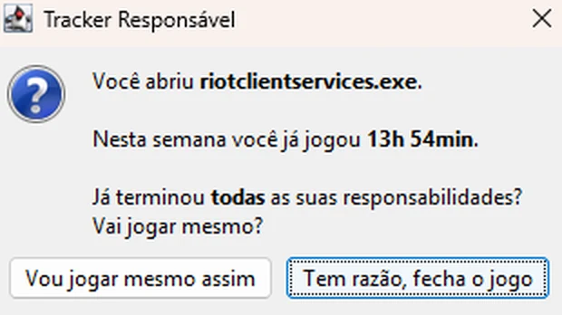
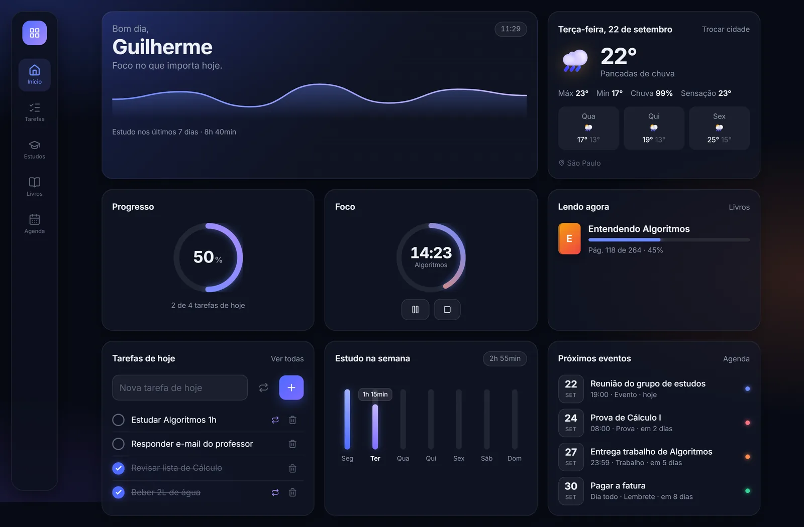
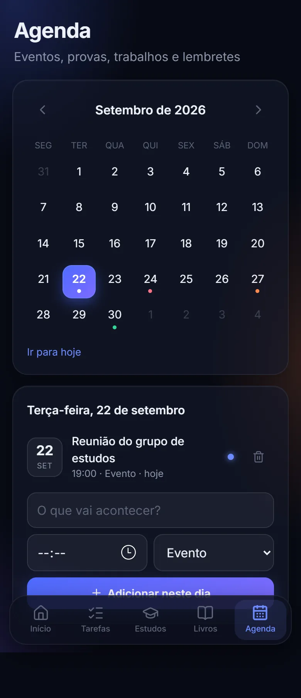

Sobre mim
Olá, eu sou o Guilherme.
Estudante de Ciência da Computação. Construo software para resolver problemas reais do meu dia a dia, do desktop à web.
- Java
- TypeScript
- Python
- React
- SQL
- Agora
- Cursando o 2º semestre de Ciência da Computação na Universidade São Judas Tadeu. Neste semestre: Matemática Computacional Aplicada e Projeto e Engenharia de Software.
- Área
- Tenho interesse em desenvolvimento e em análise.
- Por que computação
- A tecnologia faz parte da minha vida desde muito cedo, e sempre gostei de entender como ela funciona. Depois de fazer um curso de Java e começar a criar projetos básicos, como uma calculadora com front-end, me apaixonei por programar. Desde então, tenho como objetivo crescer e prosperar na área.
- Motivações
- Deixar a minha marca no mundo e contribuir para que ele evolua.
- O que eu quero
- Minha primeira oportunidade como estagiário ou desenvolvedor júnior, num time onde eu possa aprender e entregar software de verdade.
- Objetivos
- Alavancar a minha carreira e seguir aprendendo cada vez mais na área.
- Contato
- guilhermewaldemir@outlook.com
Role ou arraste para o lado

Por que eu fiz
Sempre fui muito do mundo dos games, até perceber que aquilo tinha virado um vício e estava me atrapalhando a alcançar os meus objetivos. Dei uma parada total nos jogos e passei a focar em estudar e aprender mais sobre a área. Este app nasceu dessa virada: em vez de confiar só na força de vontade, construí em software o lembrete de que eu precisava. Além de conseguir me concentrar mais nos meus estudos, transformei o meu problema em um estudo.
Como funciona
- A cada 5 segundos, o
ProcessMonitorlê os processos abertos (APIProcessHandledo Java) e compara com a sua lista de jogos. - Quando um jogo acaba de abrir, a janela de aviso aparece por cima dele. Você escolhe jogar ou fechar o jogo.
- O
PlayTimeTrackerabre, estende ou fecha a sessão de jogo e grava tudo num banco SQLite local. - O ícone na bandeja mostra o total da semana (de segunda a domingo) e permite iniciar o app junto com o Windows.
Decisões técnicas
- Salva a cada verificação, não só ao fechar o jogo: se o PC desligar de repente, perde no máximo 5 segundos.
- Sem tempo em dobro: conta enquanto qualquer jogo estiver aberto (Steam + jogo não somam duas vezes) e ignora o tempo em que o PC ficou em suspensão.
- Só uma cópia rodando, com
FileLock: a trava é do sistema operacional e é liberada até se o app travar. - Testável: a leitura de processos é injetada no monitor, então os testes em JUnit 5 simulam jogos abrindo, suspensão do PC e sessões que atravessam a virada da semana.
Próximos passos
- Meta semanal de horas, com aviso ao ultrapassar.
- Histórico por semana e por jogo.


Por que eu fiz
É o projeto que eu uso todos os dias. Ele me mantém organizado e não me deixa esquecer os meus afazeres. Além da utilidade, escolhi construí-lo do meu jeito, com a cara que eu gosto, para que toda vez que eu abrisse o painel sentisse a satisfação de estar usando algo feito por mim.
O que ele faz
- Início
- Saudação, clima, progresso do dia, timer de foco e próximos eventos.
- Tarefas
- Listas do dia e da semana; as repetidas voltam sozinhas.
- Estudos
- Pomodoro que registra a sessão, metas semanais por disciplina.
- Livros
- Estante com status, progresso por página e lidos no ano.
- Agenda
- Calendário com eventos, provas, trabalhos e lembretes.
- Sincronização
- Login e mudanças refletidas nos outros aparelhos em ~1 s.
Como funciona
- Dados em um só lugar: todas as telas leem de um Context do React. Só um arquivo conversa com o banco.
- Atualização otimista: a mudança aparece na tela na hora e é enviada ao banco em seguida, com o
localStoragecomo cache para o app abrir instantâneo. - Tempo real: o app assina as mudanças das tabelas pelo Supabase Realtime e sincroniza de novo ao voltar para a tela.
Decisões técnicas
- Segurança por linha (RLS): políticas no PostgreSQL garantem que cada usuário só lê e altera os próprios dados; a chave do navegador é pública de propósito.
- Timer à prova de tela bloqueada: guarda o horário de término, não um contador. O tempo restante é sempre “fim − agora”.
- Tarefas repetidas sem “reset”: a tarefa guarda em que dia foi concluída; se não for o dia atual, aparece pendente.
- Sem framework de CSS: estilo feito com variáveis CSS e layout mobile-first.
Memória RAM 16 GB DDR4 3200 MHz
KF432C16BB1/16
- TerabyteMelhor preçoR$ 229,90
- KaBuM!R$ 239,99
- AmazonR$ 254,00
- Mercado LivremanualR$ 259,90
Histórico de preço · últimos 30 dias
Por que eu fiz
Até aqui, todos os meus projetos eram pessoais. Este eu fiz para compartilhar e ajudar outras pessoas: minha namorada, amigos, familiares e qualquer um que precise procurar um preço melhor. Foi o primeiro projeto em que pensei no usuário do outro lado da tela, e não só em mim.
Como funciona
- Você organiza os produtos em categorias e cadastra o link de cada loja, com o código do fabricante ou EAN.
- Cada loja é lida do jeito que ela permite: pelo bloco JSON-LD (padrão schema.org) na maioria, pelo HTML na Amazon e pela API oficial no Mercado Livre.
- Ele confere se cada página é mesmo aquele produto, comparando o código.
- Cada verificação vai para o histórico no SQLite. A tela mostra as lojas do mais barato ao mais caro, um gráfico da variação de preço e produtos parecidos.
Lojas suportadas
| Loja | Leitura |
|---|---|
| KaBuM!, Terabyte | Automática (JSON-LD) |
| Amazon | Automática (HTML) |
| Mercado Livre | Automática (API oficial, com OAuth 2.0) |
| Magazine Luiza | Manual (bloqueia robôs) |
Integração com a API do Mercado Livre
O Mercado Livre bloqueia programas que leem as páginas dele. Em vez de tentar driblar o bloqueio, o projeto usa a API oficial que a própria loja oferece. É o caminho legítimo, e trouxe o problema mais interessante do projeto: autenticação.
- O app é registrado no portal de desenvolvedores; o App ID e a chave secreta ficam em variáveis de ambiente, fora do código.
- Em Configurações, o botão “Conectar” leva ao Mercado Livre, que pede a autorização e devolve um
codede vida curta. - O site troca esse código por um
access_token(válido por 6 horas) e umrefresh_token, guardados no banco. - A partir daí, cada leitura envia o token no cabeçalho
Authorization, e o token é renovado sozinho um pouco antes de expirar.
- PKCE: o pedido de autorização manda o resumo (SHA-256) de um segredo sorteado na hora, e só quem tem o segredo original consegue trocar o código pelo token. Isso protege mesmo que alguém intercepte o código no meio do caminho.
- Parâmetro
state: um valor aleatório guardado na sessão e conferido na volta, para garantir que a resposta veio do pedido que o site fez. - O
refresh_tokené de uso único: cada renovação devolve um par novo, que precisa ser salvo na hora, senão o acesso se perde. - Funciona sem login do usuário: o site também obtém um token da própria aplicação, então a conexão pessoal é opcional e a leitura nunca para por falta dela.
- Anúncio ou catálogo: um link pode ser a oferta de um vendedor (
/MLB-123) ou uma página de catálogo com vários (/p/MLB123). No catálogo sem oferta em destaque, o site percorre os vendedores e fica com o menor preço entre os produtos novos. - Testado sem chamar a API: as funções recebem de fora quem faz as requisições, então os 39 testes rodam com respostas simuladas, sem internet e sem gastar cota.
Decisões técnicas
- Dinheiro sem
float: preços emDecimale centavos, formatados como “R$ 1.299,90”. - Falha isolada: uma loja fora do ar não derruba as outras; se ela bloquear o robô, dá para informar o preço à mão.
- Produtos parecidos encontrados por similaridade de Jaccard.
- Testes sem internet: o pytest usa páginas reais das lojas salvas no repositório e roda automaticamente no GitHub Actions.
Objetivo
Estágio em desenvolvimento de software ou análise, em um time onde eu aprenda com código de produção e contribua desde cedo. Disponível para estágio de 6h, manhã ou tarde · São Paulo – SP.
Formação
- Bacharelado em Ciência da Computação
- Universidade São Judas Tadeu · 2º semestre · previsão de conclusão: dez. 2030
- Disciplinas atuais: Matemática Computacional Aplicada e Projeto e Engenharia de Software.
Competências técnicas
- Linguagens
- Java · Python · SQL
- Bibliotecas e frameworks
- Flask · Swing/AWT
- Bancos de dados
- SQLite · PostgreSQL (Supabase)
- Testes
- JUnit 5 · pytest
- Ferramentas
- Git · GitHub · GitHub Actions · Maven · Netlify · Render
- Idiomas
- Português (nativo) · Inglês B1 (intermediário)
Projetos
- Tracker Responsável Java, Swing, SQLite, Maven, JUnit 5
- Desenvolvi app para Windows que detecta jogos em segundo plano, registra as horas jogadas na semana em SQLite e avisa antes de cada sessão. 19 testes em JUnit 5 cobrem regras de sessão, suspensão do PC e virada de semana.
- Painel Pessoal React, TypeScript, Vite, Supabase, PWA
- Construí painel diário mobile-first com tarefas, estudos, livros, agenda e clima. Implementei login, sincronização em tempo real entre aparelhos e segurança por linha (RLS) no PostgreSQL. Publicado na Netlify e instalável como app.
- Monitor de Preços Python, Flask, SQLite, pytest, GitHub Actions, Render
- Desenvolvi app web que compara o preço do mesmo produto em 5 lojas, valida se as páginas são do mesmo item por código do fabricante/EAN, guarda o histórico com gráfico e envia alertas por e-mail. 308 testes em pytest rodam sem internet a cada push, no GitHub Actions.